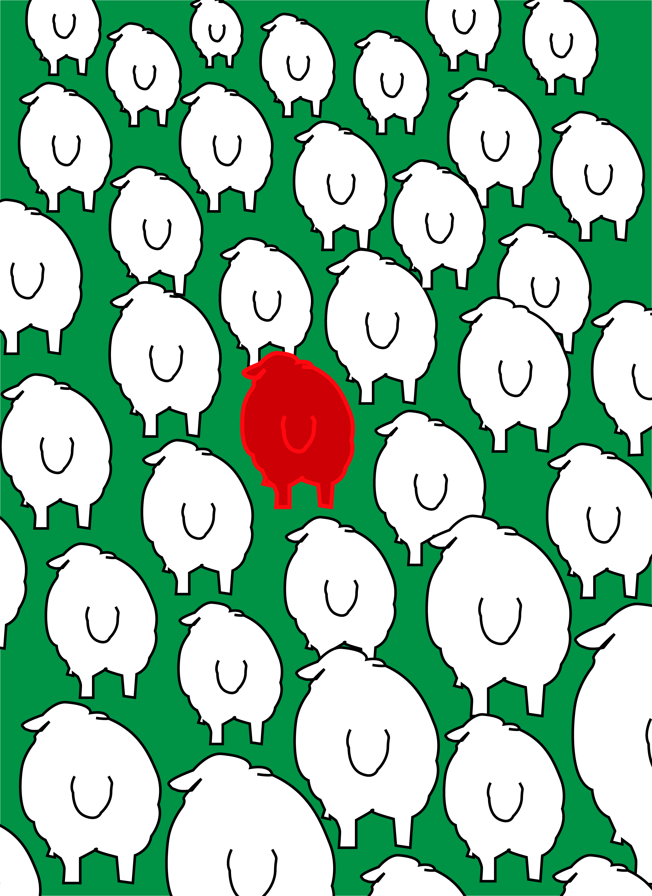
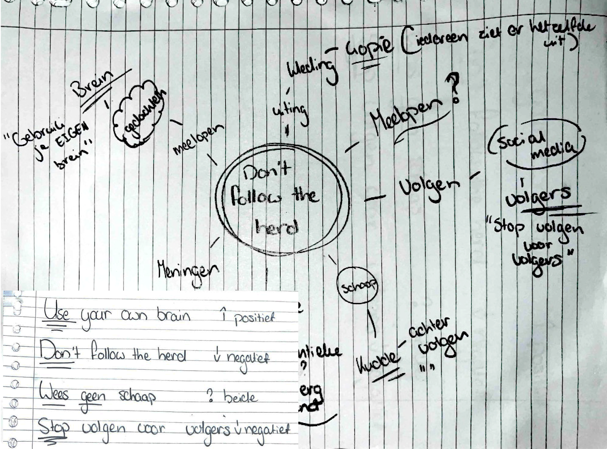
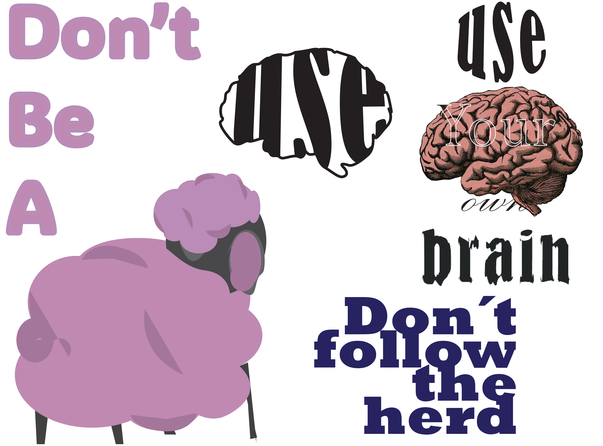
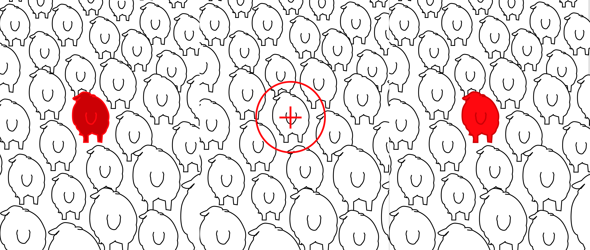

Don’t Be a Sheep
Voor dit posterproject onderzocht ik hoe snel mensen geneigd zijn om anderen te volgen. Vanuit het thema ‘volgers’ ontstond het concept Don’t Be a Sheep: een visuele boodschap over zelf nadenken en niet automatisch met de massa meegaan. Het rode schaap doorbreekt de kudde en staat symbool voor het maken van je eigen keuzes.
Concept & keuzes
- Beeldtaal: Het schaap werd de belangrijkste metafoor voor het volgen van de massa. Door één schaap te laten afwijken wordt de boodschap zonder veel tekst duidelijk.
- Kleur: Het rood zorgt ervoor dat één schaap direct uit de witte kudde springt. Het groen geeft het ontwerp een sterk contrast.
- Illustratie: De schapen zijn bewust eenvoudig en handgetekend gehouden. Door dezelfde vorm steeds te herhalen ontstaat het gevoel van een grote, uniforme groep.

Van mindmap naar concept
Ik begon met een mindmap rond Don’t Be a Sheep. Vanuit woorden als volgen, kudde, meningen en social media onderzocht ik verschillende boodschappen en beelden. Eerst experimenteerde ik onder andere met typografie en een brein, waarna het schaap steeds meer centraal kwam te staan.
first ideas → visual experiments

Dit gedeelte laat mijn experimenten zien met compositie, kleur en de positie van het afwijkende schaap. De verschillende versies laten zien hoe ik onderzocht welke compositie de aandacht het sterkst naar het afwijkende schaap trekt.